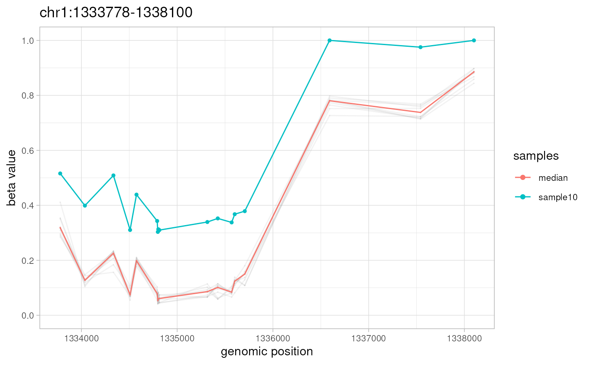

`simulateData` generates aberration-free methylation data using an experimental data set as a template, and further introduces methylation aberrations if `GRanges` object containing a set of aberrantly methylated regions was provided. The output can be used to evaluate performance of algorithms for search of differentially (DMR) or aberrantly (AMR) methylated regions.
Arguments
- template.ranges
A `GRanges` object with genomic locations and corresponding methylation beta values included as metadata (the same object must be supplied to this and to the `simulateAMR` functions).
- nsamples
A single integer >= 1 indicating the number of samples to generate.
- amr.ranges
A `GRanges` object with genomic locations of methylation aberrations (epimutations). If `NULL` (the default), no aberrations is introduced, and function will return "smoothed" data set. If supplied, `GRanges` object must contain the following metadata columns:
`revmap` – integer list of `template.ranges` genomic locations that are included in this AMR region
`sample` – an identifier of a sample to which corresponding AMR belongs. Must be among the supplied or auto generated `sample.names`
`dbeta` – absolute deviation to be introduced. Must be numeric within the closed interval [0,1] or NA. When NA - the resulting beta value for the corresponding genomic position will also be NA
Such an object can be obtained using
simulateAMRmethod or manually.- sample.names
A character vector with sample names. If `NULL` (the default), sample names will be auto generated. When specified, the length of the `sample.names` vector must be equal to the value of `nsamples`.
- compute
A single string for the distribution to fit to the data. Currently accepts "beta+binom" (the default) only, which stands for endpoint-inflated beta distribution. See Details section and
getAMRmethod description for additional explanations.- compute.estimate
A single string for the method of parameter estimation of beta distribution. The default ("mom") stands for the method of moments based on the unbiased estimator of variance and includes {0;1} endpoints in calculation of moments (mean, unbiased variance). Other options are "amle" (approximation of maximum likelihood estimation) and "nmle" (numeric maximum likelihood estimation) - both ignore {0;1} endpoints in calculations. More details on these methods are given in
getAMRmethod description.- compute.weights
A single string for the method to compute optional sample weights that are used during estimation of beta distribution parameters. If default ("equal"), all weights are equal. Otherwise, weight of a value equals to a natural logarithm of inverse absolute distance of this value to the sample median ("logInvDist"), a square root of inverse absolute distance of this value to the sample median ("sqrtInvDist"), or an inverse absolute distance of this value to the sample median ("invDist"). Using weighted parameter estimation allows to increase sensitivity of outlier detection. More details on weighted parameter estimation are given in
getAMRmethod description.- ncores
A single integer >= 1 for the number of OpenMP threads for parallel computation. By default (NULL), function will use half of available cores. Results of this function are always identical (reproducible) even when more than one core is used (at a cost of serial random number generation).
- verbose
boolean to report progress and timings (default: TRUE).
Value
The output is a `GRanges` object with genomic ranges that are equal to the genomic ranges of the provided template and metadata columns containing generated methylation beta values for `nsamples` samples. If `amr.ranges` object was supplied, then randomly generated beta values will be modified accordingly.
Details
For every genomic location in the template data set (`GRanges` object with genomic locations and corresponding methylation beta values included as metadata) `simulateData` does the following:
estimates parameters of beta distribution
in the same input, calculates frequencies of zero and one values (endpoints; whenever present)
uses estimated parameters of beta distribution and probabilities (observed frequencies) of {0;1} values to generate `nsamples` random values by means of `stats::rbeta` function (for beta values) and/or `stats::rbinom` function (for {0;1} endpoint values, according to their frequencies and therefore probabilities).
This results in "smoothed" data set that has biologically relevant distribution of methylation values at every genomic location, but does not contain methylation aberrations. If the `amr.ranges` parameter points to a `GRanges` object with aberrations, every AMR is then introduced into the "smoothed" data set as following: if mean methylation beta value for AMR region across all samples in the "smoothed" data set is above (below) 0.5 then all beta values for the sample defined by the `sample` metadata column are decreased (increased) by the absolute value specified in the `dbeta` metadata column. Resulting data sets with (or without) AMR together with the `amr.ranges` set of true positive aberrations can be used as test data set to evaluate performance of algorithms for search of differentially (DMR) or aberrantly (AMR) methylated regions.
Note
NA values within metadata columns of `template.ranges` are silently dropped in all computations. NA values will also not appear in the result of this function, unless parameters of beta distribution and/or probabilities of zeros or ones cannot be estimated (e.g., due to too many NA values in `template.ranges` metadata).
See also
simulateAMR for the generation of random methylation
aberrations, getAMR for identification of AMRs,
plotAMR for plotting AMRs, getUniverse
for info on enrichment analysis, and `ramr` vignettes for the description of
usage and sample data.
Examples
data(ramr)
amrs <-
simulateAMR(ramr.data, nsamples=10, regions.per.sample=3,
samples.per.region=1, min.cpgs=5, merge.window=1000)
noise <-
simulateAMR(ramr.data, nsamples=10, regions.per.sample=20,
exclude.ranges=amrs, min.cpgs=1, max.cpgs=1, merge.window=1)
noisy.data <-
simulateData(template.ranges=ramr.data, nsamples=10, amr.ranges=c(amrs,noise))
#> Preprocessing data
#> [0.051s]
#> Simulating data
#> [0.003s]
#> Introducing epimutations
#> [0.013s]
plotAMR(data.ranges=noisy.data, amr.ranges=amrs[1])
#> Plotting 1 genomic ranges
#> 100%
#> [0.058s]
#> $`chr1:1117473-1118965`

#>